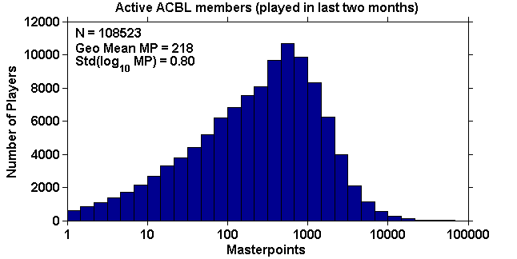
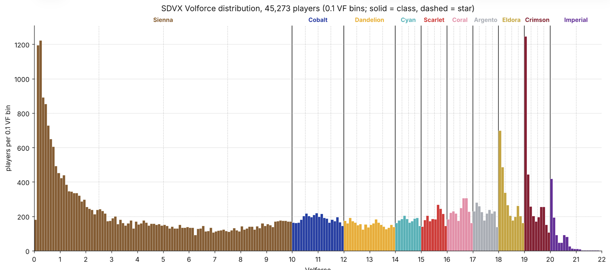
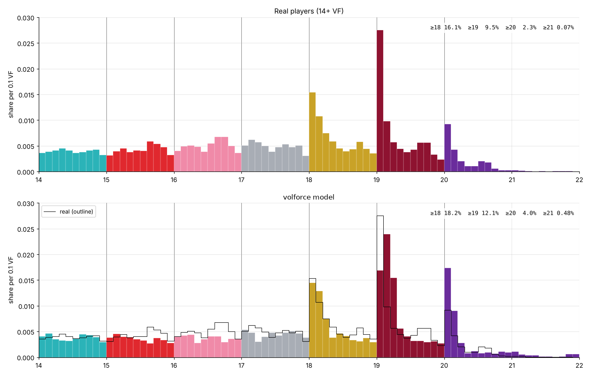
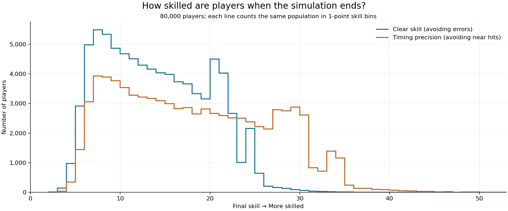
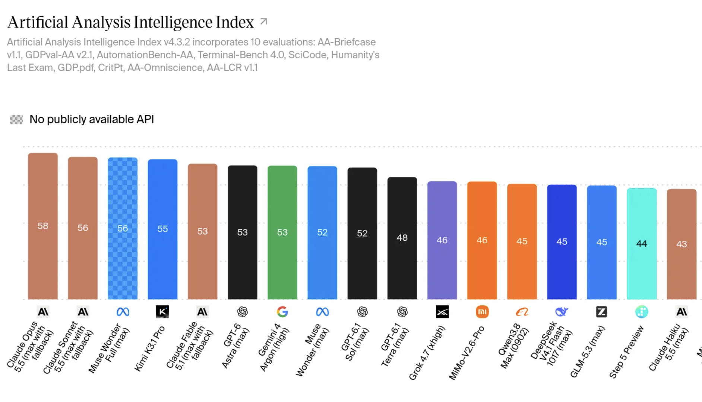
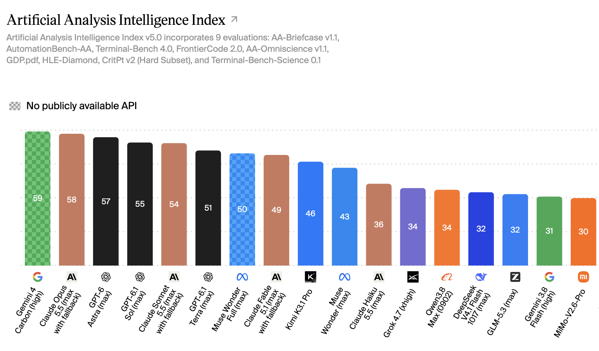

Warped Metrics
Table of Contents
Beware the Warped Metric
I have been doing a lot of thinking recently about ways that simple metrics could produce unintuitive distributions. There is an interesting phenomenon for scoring metrics that I have not seen discussed too frequently, where the resulting distribution of a sensible-seeming metric can end up confusing and hard to interpret.
I have taken to calling these "warped metrics", and I wanted to put together a quick post outlining some examples of this potentially happening.
Case Study: Sound Voltex Volforce
What Is Volforce
Recently I've been playing a lot of Sound Voltex, which is a Konami rhythm game in the Bemani series of games. The main way players measure skill level in Sound Voltex is through a metric called Volforce. To boil it down simply, Volforce takes your 50 all-time best scores and assigns a point value to each of your performances based on score. It is calculated as follows:
At its core, volforce is a super simple metric. If you get more good scores, it goes up. Unlike something like Elo ratings or other matchmaking ratings, it never goes down. It's a bit like Masterpoints in competitive bridge, in that respect, in the sense that it's more of an awards system than a rating. A great article by Matthew Kidd discusses at length about the distribution of Masterpoints, and from that article we can see that the distribution is roughly log-normal, with a heavier left tail since there are more weak players than strong ones.

This seems like what we might expect the distribution of Volforce to look like. It takes time to climb in Sound Voltex, and you'd expect fewer and fewer people to exist in each consecutive tier. That would make sense.
An Unusual Distribution
On May 25th, 2020, a user by the name of ANZUINFO put together a spreadsheet containing scraped data from public e-amuse profiles, in order to get a sense for the distribution of volforce ratings. This spreadsheet contained the volforce ratings of about 45,000 users, which we can use to construct the following distribution.

I saw this emerge after playing around with the data and thought – wow, how incredibly strange. The modal volforce value for a player with an e-amuse profile is about 19.00! There are even more players with 19.00 volforce than there are players with the volforce amounts you'd expect to see after playing one set for the first time and never playing again. It is, very definitively, not log-normal like we might have expected.
How on earth is this possible?
A Simple Volforce Model
A key insight you might have after seeing the above distribution is that, with equal width bins, the skill level required to climb from one bin to the next could be subject to some other, unseen function. For example, it could be that the climb from 19.00 to 19.10 could completely contain a hugely wide skill band, while the climbs from 18.90 to 19.00 and the climbs from 19.10 to 19.20 could both be much narrower.
Putting this another way, our simple metric of Volforce might be an excellent way to describe the skill level of a Sound Voltex player, except for specific "dead zones" inherent to the metric where tons of players saturate at the same level until breaking through a plateau. This is what we can loosely describe as a warped metric.
We can create a simple model of Sound Voltex players which attempts to reproduce something as close as possible to the observed population of actual players we see in our dataset. We can create a population of players who all begin with different skill levels and rates of progress. As they play more charts, they improve in skill, and are able to get fewer errors and better timing on gradually harder and harder charts. Each "play" generates a score within the player's current estimated skill level, and the player improves with each play. We keep track of each player's 50 best plays by volforce, with our aim being to construct a population similar to our real-world data.
In our model we can produce similar distributions through a mix of a few factors. First, we model attrition rate from players: newer players are more likely to quit, and players are less likely to quit right before a volforce milestone, and more likely to quit afterwards1. Next, we outline some "farming" behaviors, where ordinary plays are interspersed at some probability with charts played with the intent to get volforce. This becomes most noticeable starting at level 17, where maxing out charts for score is optimal for volforce, but playing charts in your normal skill range worth no volforce is necessary to improve to the next level of difficulty, which will eventually become needed to continue climbing once the player's current "farming level" saturates.
Finally, we fit the constants of our model through stochastic local search to minimize L1 distance between our model's outputs and the true population2. A gist with our code can be found here. Running this model produces the following:

Here we see roughly the behavior that we're after: roughly uniform until 18.00 volforce, and then big plateaus at 18.00, 19.00 and 20.00. Our model produces too many players at 20.00 volforce but it's just a napkin cartoon, intended to illustrate the basic concept.
Interestingly, we can pull back out the distribution of skill levels for our playerbase. This has a shape which looks a lot easier to understand. Players accumulate some basic skills super quickly, there's gradual attrition over time, and then there are bumps for spots where clearing hard charts and getting increasingly better timing are more important for accumulating more volforce.

The point here isn't necessarily to build something explanatory for the distribution of volforce scores in the arcadegoer population, it's just a simulation which produces a similar distribution. But the core thing we're demonstrating here is that a volforce point is not an even unit of skill, because there are chokepoints in the climb, and equal score differences do not necessarily imply equal differences in ability3.
Artificial Analysis Intelligence Index
On October 27, Artificial Analysis announced the v5 of their intelligence index which was intended to update their single-value benchmark intended to broadly rank the intelligence of large language models. This was primarily by adding new, difficult benchmarks to the testing suite, upgrading existing benchmarks to new versions, and deprecating benchmarks which were already saturated. These were all well-received, good changes that seemed to improve the list a lot. Below is the old, v4.3.2 index:

…and now the new v5 index:

Most of the ordering changes to the list are ones which seem right, mostly by boosting OpenAI models, boosting Claude Haiku 5.5, and nerfing models like Kimi K3.1 and Muse Wonder Full.
But discussion on this new change placed a lot of emphasis on the number of points between the models, which I find precarious for the reasons described above. For example, consider this tweet concerning the performance of open models.
Open weights models fall further behind in v5. The leader, Kimi K3.1 Pro (weights not yet released), scores 46, 12 points behind the leader, compared with a 3-point gap in v4.3. Of models with released weights, DeepSeek V4.1 Flash 1017 (max) and GLM-5.3 (max) score highest at 32, and Claude Haiku 5.5 (max) outscores all of them. The gap is widest on HLE-Diamond and Terminal-Bench-Science, where Kimi K3.1 Pro scores 37% and 34%, compared with 68% for Claude Opus 5.5 (max) and 63% for GPT-6 Astra (max).
— Artificial Analysis (@ArtificialAnlys) October 28, 2026
Focusing on the top-performing open-weights model, DeepSeek-v4.1-flash-1017, the primary differences between the two models are now underperforming Haiku 5.5, and being a larger number of points behind the leaders. But the number attached to each model doesn't have a clear semantic meaning; are we meant to think that Opus 5.5 is nearly double the intelligence of DeepSeek? How many points does this metric rise if the model gets a little bit better? or a lot better? Is this different at different points along the metric?
In some ways the gap between these two metrics is very similar to our volforce example above. The top one is much flatter, the bottom one has more vertical separation. We can probably use these metrics to determine which models are similar in power to other ones around it, and we definitely can use the ordering changes to see which models were disadvantaged/advantaged based on the lack of hard benchmarks or the inclusion of saturated ones (e.g. Astra and Kimi, respectively). But it's actually fairly difficult to quantify "how far away" models are from each other, because that depends on the marginal difficulty of each point, which may be highly variable depending on the model's current score.
All this is to say: a point is not always just a point. Beware the warped metric.
Footnotes:
Well supported in groups like marathon runners and also myself in various games I got sick of playing immediately after reaching some goal ranking.
Other misc details about the model. Plays model both misses and near-misses, in order to model perfect ultimate clears being way harder than ultimate clears. Play counts have a ceiling, otherwise players could just play forever until they reach imperial. Difficulty levels are roughly exponential.